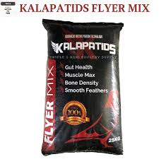

| 🐓 BREEDER MIX 🐓 |
|  |
BREEDER MIX 💰 Price: ₱50 per kilo 📌 Description: BREEDER MIX is a specially formulated feed for breeding chickens and poultry. It contains balanced nutrients to support egg production, healthy chicks, and overall flock performance. ✅ Key Benefits: - Supports strong egg production - Boosts reproductive health - Enhances chick development - Improves feather and body condition - Ideal for daily feeding of breeder birds 🐔 Best For: Breeding chickens, layer hens, and adult poultry 🕒 Feeding Guide: Feed daily with clean water. Adjust portions based on age, number, and type of breeder birds. |